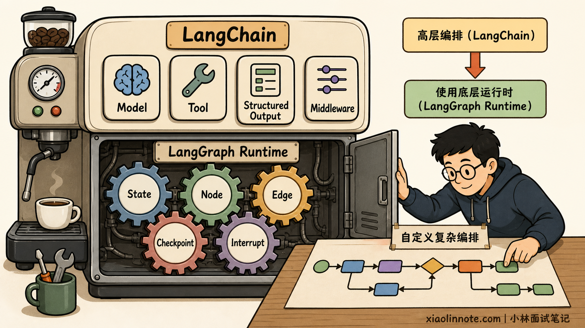
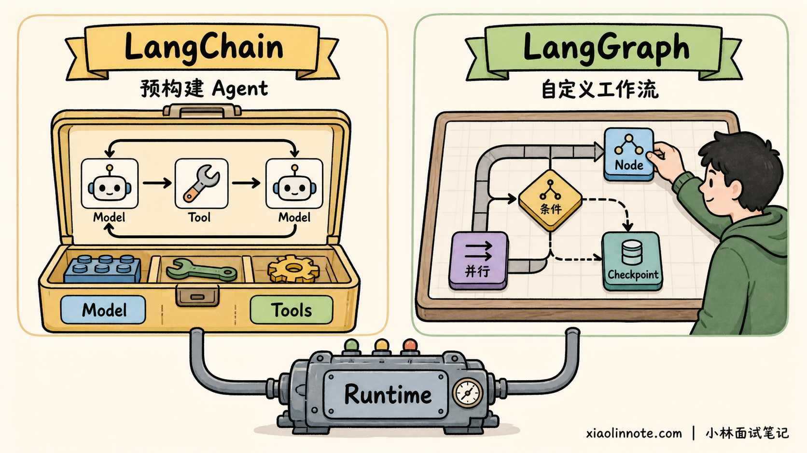
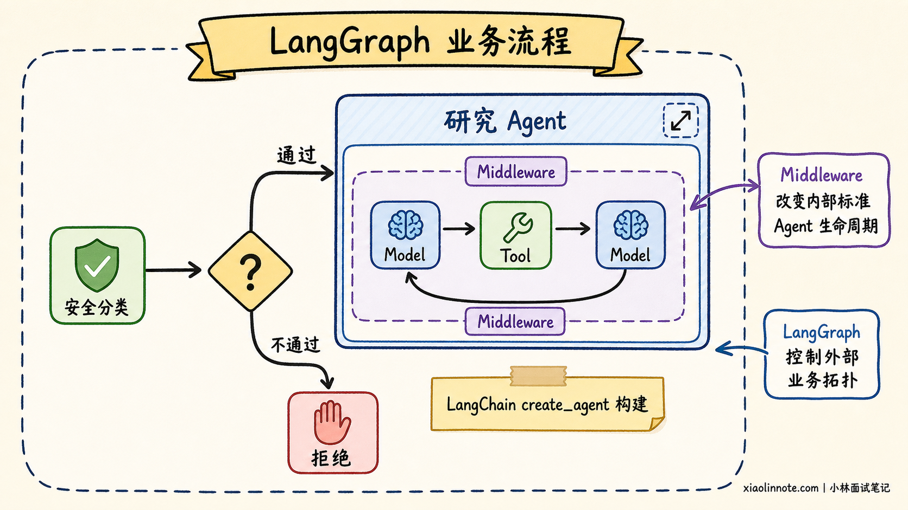
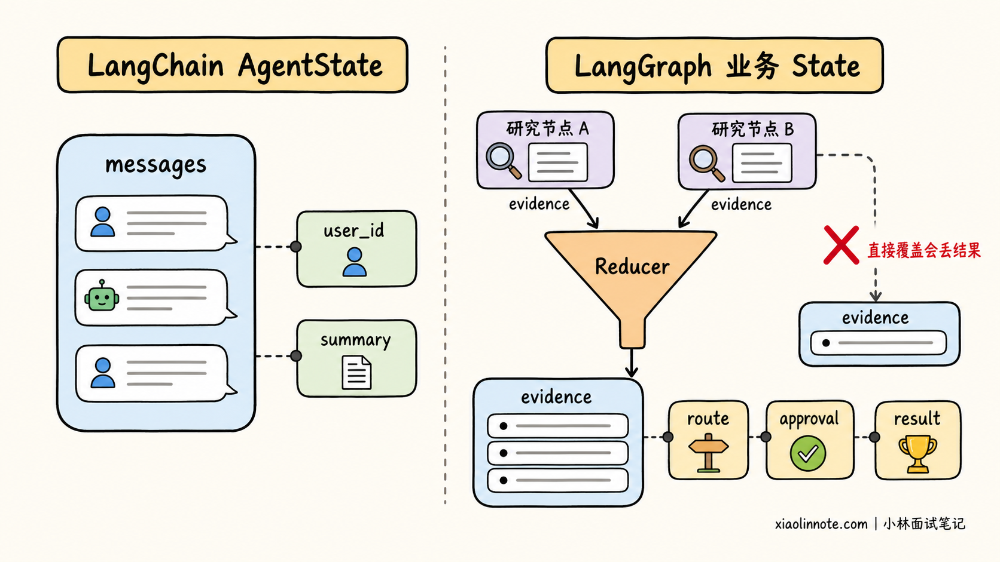
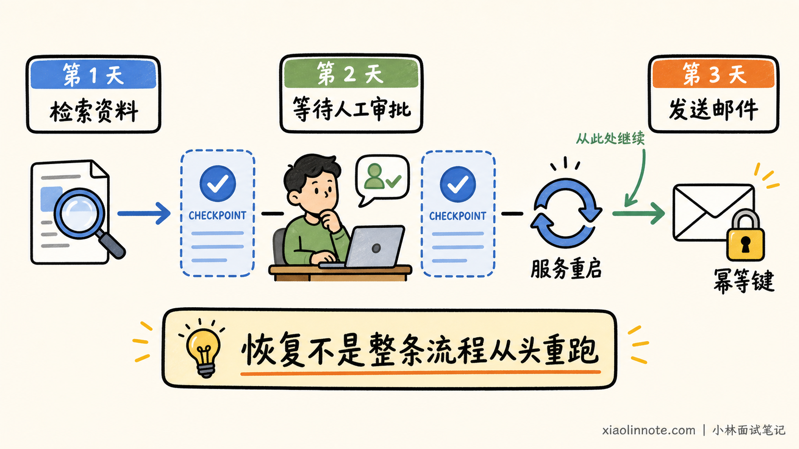
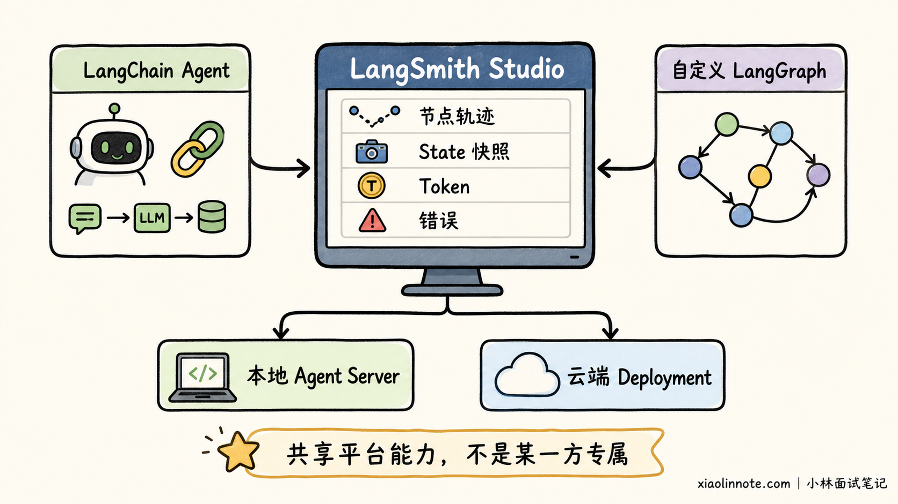

本篇目录
9. 请你详细说说 LangChain 和 LangGraph 的核心区别是什么？
👔面试官：你说说 LangChain 和 LangGraph 有什么区别？
🙋♂️我：LangChain 只能把步骤线性串起来，LangGraph 才能做分支和循环。
👔面试官：这句话早就不准确了。LCEL 有分支和并行能力，LangChain v1 的 create_agent 本身也是带条件和循环的图。你把「能不能分支」当成两者边界，说明你还停留在旧版教程里。
🙋♂️我：那 LangChain 负责开发，LangGraph 负责部署。需要持久化、流式输出和人工审批时，再把项目迁移到 LangGraph。
👔面试官：也不对。现在 LangChain Agent 就运行在 LangGraph 上，能直接使用检查点、流式输出和人工审批中间件，并不是用了 LangChain 就没有这些能力。
🙋♂️我：明白了，它们其实是一套东西，只是 LangGraph 换了一种图写法，选哪个都差不多。
👔面试官：又走到另一个极端了。底层运行时可以相同，但抽象层级、控制权和开发成本完全不同。标准工具调用 Agent 和跨多个业务阶段的长流程，当然不能用同一个粒度去设计。
比较 LangChain 和 LangGraph，先要分清「高层 Agent 框架」与「低层编排运行时」之间的关系。
💡 简要回答
LangChain 和 LangGraph 处在不同的抽象层。按照当前官方定位，LangChain v1 是高层 Agent 开发框架，负责提供模型、工具、结构化输出和 middleware 等常用能力。
LangGraph 则是低层的 Agent 编排框架与运行时，让开发者直接设计状态、节点、路由、并行、中断和恢复。
两者最关键的关系是，LangChain v1 的 create_agent 构建在 LangGraph 之上，返回一个编译后的图。也就是说，LangChain Agent 不是脱离 LangGraph 运行的另一套引擎，它已经继承了 LangGraph 的状态、持久化、流式输出、durable execution 和 human-in-the-loop 等运行能力。
两者的区别在于开发者控制哪一层。若需求是常见的「模型判断 -> 调用工具 -> 返回模型」循环，我会优先用 LangChain，再借助 middleware 做提示词、重试、护栏和审批等定制。
若业务需要显式控制多个阶段，让确定性步骤与 Agent 步骤混排，或者要处理复杂并行、长期暂停和多 Agent 协作，我会直接用 LangGraph。create_agent 生成的 Agent 仍然可以作为图中的节点或子图复用。
LangChain 帮我快速得到一个好用的 Agent，LangGraph 帮我精确控制整个 Agent 系统怎么运行。
📝 详细解析
两者处于同一层吗？
很多林友第一次看到这两个名字，会自然地问「哪个功能更多」。可这个问题就像在比较一台咖啡机和它内部的控制系统，能列出差异，却很容易忽略两者是上下层关系。
用一句人话理解，LangChain 给我们一套装好的 Agent，LangGraph 让我们自己设计整条业务路线。
截至 2026 年 7 月，官方也是按上下层来定位它们。LangChain 是高层 Agent 框架，提供模型、工具和常见的 Agent 循环；LangGraph 是更低层的编排框架与运行时，负责有状态流程如何执行、暂停和恢复。
LangGraph 可以使用 LangChain 的模型和工具组件，但并不强制依赖 LangChain，也可以直接接其他模型 SDK 或普通 Python 函数。
更关键的是，LangChain v1 的 create_agent 会构建一个基于 LangGraph 的图运行时。Agent 在模型节点和工具节点之间循环，直到模型给出最终答案或命中停止条件。因此正确的层次关系是：
LangChain 高层 Agent API -> 编译后的 LangGraph -> 检查点、流式事件、中断与执行运行时

这也解释了为什么两者既有重叠能力，又不能说「选哪个都一样」。用 LangChain 时，框架已经替你搭好了常见 Agent 的拓扑，你主要配置零件和生命周期钩子；用 LangGraph 时，节点怎么拆、状态怎么更新、下一步去哪，都由你来决定。
核心差异：抽象层级
先把容易混淆的能力放进一张表里看，边界就清楚多了：

| 对比维度 | LangChain v1 | LangGraph |
|---|---|---|
| 官方定位 | 高层 Agent 开发框架 | 低层 Agent 编排框架与运行时 |
| 主要入口 | create_agent、模型、工具、middleware、结构化输出 | StateGraph、State、Node、Edge、Command、Send、Subgraph |
| 默认提供什么 | 预构建的模型与工具调用循环，以及常用扩展点 | 构建任意有状态工作流的编排原语，不替你规定 Prompt 或 Agent 架构 |
| 控制流 | 标准 Agent loop 已搭好，可通过 middleware 定制行为 | 开发者显式定义顺序、条件路由、循环、并行、动态分发和子图 |
| 状态 | 以 AgentState 和 messages 为默认核心，可扩展自定义字段 | 可设计完整 State Schema、输入输出 Schema、内部通道与 reducer |
| 持久化与记忆 | 通过底层 LangGraph 的 checkpointer 和 store 使用 | 直接在图编译和运行层控制 checkpointer、store、thread 与状态历史 |
| durable execution | 可以继承底层运行能力，标准 Agent 也能暂停和恢复 | 是核心定位之一，更适合显式设计长流程的恢复边界和副作用 |
| 人工介入 | 常用 HumanInTheLoopMiddleware 审批工具调用，也能组合自定义逻辑 | 可在任意节点内用 interrupt() 暂停，用 Command(resume=...) 恢复 |
| 流式输出 | 直接从 Agent 输出消息 token、步骤更新和自定义进度 | 除消息和状态外，还可观察 checkpoint、task、debug 等更底层事件 |
| 扩展方式 | middleware 钩住 Agent、模型和工具生命周期 | 节点、边、路由函数、Command、Send、子图和 Runtime |
| 部署与调试 | 可接 LangSmith tracing、Studio 和 Deployment | 使用同一套 LangSmith 能力，并能更直接查看节点路径和状态变化 |
| 更适合 | 标准工具调用 Agent、客服助手、数据查询助手、快速原型 | 长流程、多阶段审批、确定性与 Agent 混排、复杂并行、多 Agent 系统 |
表中的「持久化」「流式输出」「人工介入」同时出现在两列，因为这些能力由 LangGraph 运行时提供，也能从 LangChain Agent 的高层接口中使用。两者差别主要是封装层级和控制粒度，不是简单的有或没有。
LangChain 只能线性执行吗？
为什么「LangChain 只能线性，LangGraph 才能分支」是错的？因为它混淆了三个不同概念。
先看传统 Chain。它并不等于只能顺序执行，LCEL 除了 RunnableSequence，也能通过并行和分支 Runnable 表达并发与条件选择。固定的 Prompt、模型、解析器流水线确实常写成线性形式，但那是用法选择，不是框架能力上限。
再看 LangChain v1 的 create_agent，它本身就不是一条直线。模型可能直接结束，也可能请求工具；工具执行后又会回到模型继续决策，这已经形成「条件路由 + 循环」。
多个工具调用还可能被并行执行。因此，拿一条早期 prompt | model | parser 管道去代表当前 LangChain Agent，并不公平。
LangGraph 把业务拓扑变成一等公民，这一点拉开了两者的差异。
比如先做权限校验，再让三个研究节点并行检索，之后汇总，金额高时转人工，失败时走补偿节点，最后等待次日任务继续。这时开发者需要明确看到每个节点、状态字段和路由条件，图编排的价值才真正体现出来。
所以更准确的边界应该是：LangChain 能表达分支和循环，但它的高层 Agent API 主要围绕通用模型与工具循环组织；LangGraph 则允许开发者直接拥有整个工作流的拓扑控制权。
Middleware 与图编排有何不同？
看到 middleware 能在模型和工具前后执行代码，有些林友又会问：既然 middleware 什么都能插，为什么还要 LangGraph？
关键要看我们是在「改造同一台机器」，还是「重新规划整条生产线」。

LangChain middleware 很适合改造标准 Agent loop。例如，在模型调用前动态生成提示词、裁剪消息、选择模型和工具，在模型调用后做安全检查，或者给工具调用增加重试和人工审批。
这些逻辑都围绕 Agent、Model、Tool 的生命周期展开，不需要重新设计整张图。
LangGraph 节点和边处理的是更一般的流程结构。它可以让分类节点进入完全不同的子流程，让多个节点并行后再汇合，也可以把数据库写入、人工表单、规则引擎和一个完整 Agent 放在同一张图中。这里的每一步不一定是模型或工具调用，甚至可以完全不使用 LLM。
当前官方文档特别说明，middleware 不是独立运行时，它会运行在 create_agent 返回的编译图内部。这个完整 Agent 还可以作为节点或子图放进更大的 StateGraph，middleware 会跟着它一起工作。这正是两层组合，而不是二选一。
from typing import Literal
from langchain.agents import AgentState, create_agent
from langgraph.graph import END, START, StateGraph
class WorkflowState(AgentState):
# route 是外层业务流程状态，不属于标准 Agent loop 的固定字段
route: Literal["research", "reject"]
def classify_request(state: WorkflowState) -> dict:
# 这里用确定性规则演示路由，实际项目也可以调用分类模型
text = str(state["messages"][-1].content)
route = "reject" if "删除生产数据" in text else "research"
return {"route": route}
def choose_route(state: WorkflowState) -> Literal["research_agent", "reject"]:
# 条件边根据外层业务状态选择下一节点
return "research_agent" if state["route"] == "research" else "reject"
def reject_request(state: WorkflowState) -> dict:
# 确定性的拒绝节点不需要调用模型
return {"messages": [{"role": "assistant", "content": "该操作不在允许范围内。"}]}
# research_model 和 search_tool 由项目按实际模型、搜索服务实现
# create_agent 返回编译后的 LangGraph，可直接嵌入外层图成为子图
research_agent = create_agent(
model=research_model,
tools=[search_tool],
)
builder = StateGraph(WorkflowState)
builder.add_node("classify", classify_request)
builder.add_node("research_agent", research_agent)
builder.add_node("reject", reject_request)
builder.add_edge(START, "classify")
builder.add_conditional_edges("classify", choose_route)
builder.add_edge("research_agent", END)
builder.add_edge("reject", END)
# 外层 LangGraph 管业务拓扑，内层 LangChain Agent 管模型与工具循环
workflow = builder.compile()这段代码体现的是分工：内部研究 Agent 继续使用高层抽象，外部业务流程获得显式路由。真实项目还需要补上模型、工具、检查点和异常处理，这里只保留能说明层次关系的部分。
State：默认状态与自由建模
Agent 为什么需要状态？因为模型调用、工具结果、人工意见和中间产物不可能只靠函数局部变量一直传下去。两者都有状态，但使用姿势不同。
LangChain 为常见 Agent 准备了 AgentState，默认核心是 messages。用户消息、模型的工具调用、工具结果和最终回复都追加到这份状态中。业务还可以用 TypedDict 扩展额外字段，官方更推荐让相关 middleware 声明自己需要的状态，这样能力和数据不会散落在各处。
LangGraph 则让状态设计本身成为工作流架构的一部分。开发者可以定义整体 State，也可以区分输入、输出和内部 Schema。节点只返回局部更新，reducer 决定并行或多次更新如何合并。
为什么需要 reducer？假如多个研究节点同时写入 evidence，我们希望追加结果，而不是让后写入的结果覆盖前一份证据。因此，合并语义必须在 State 中提前定义。

这不是说 LangChain 没有 State，因为它的 Agent State 就运行在 LangGraph 上。区别在于，用 LangChain 时通常接受一套为标准 Agent loop 设计好的状态骨架；直接使用 LangGraph 时，你要为整个业务工作流设计数据通道和更新规则，也因此拥有更大的自由度和责任。
谁提供持久化与记忆？
这一部分是面试里最容易说错的地方。有人会回答「LangChain 管记忆，LangGraph 管持久化」，也有人会说「只有 LangGraph 才能断点恢复」。两种说法都把上下层拆散了。
当前 LangGraph 的持久化分成两套机制。Checkpointer 按 thread_id 保存图状态快照，适合线程内短期记忆、人工介入、时间旅行和故障恢复；Store 保存图状态之外、跨线程可读取的业务数据，适合用户偏好、事实和共享知识等长期记忆。

LangChain 的 create_agent 会把 checkpointer 和 store 交给底层图，因此 LangChain Agent 同样可以获得短期记忆、长期记忆和恢复能力。使用 Agent Server 时，持久化基础设施还可以由服务端处理。
两者的差异在控制粒度：LangChain 给标准 Agent 暴露便利入口，LangGraph 让开发者在任意节点和子图层面设计状态保存与恢复边界。
durable execution 也不只是「把数据存进数据库」。一个长流程中途失败后，如果从头重跑发邮件、扣款等副作用，状态虽然保存了，业务仍可能出事故。
可靠恢复要求把非确定性操作和副作用放进可记录的任务边界，并保证可能重试的操作幂等。直接设计 LangGraph 时，这些边界会更显式；LangChain 标准 Agent 虽然能借用同一运行时，复杂业务副作用仍需要开发者认真建模。
人工介入有什么区别？
如果需求是「模型想发送邮件时先让人确认」，LangChain 的 HumanInTheLoopMiddleware 已经非常合适。它可以在工具真正执行前暂停，然后接受批准、修改、拒绝或人工直接回复。
底层状态仍由 LangGraph 持久化，恢复时继续使用相同的 thread_id。
但如果人工节点不只是审批工具呢？比如理赔流程要展示中间材料，让审核员补充字段；营销流程要等一周后再继续；多位审核人要分别填写意见，随后根据票数路由。
这时，LangGraph 的 interrupt() 可以放在节点内部的任意业务位置，恢复时再把外部输入送回流程，更适合自定义人机协作。
因此，不能说 LangChain 没有 human-in-the-loop。准确说法是，LangChain 提供了围绕 Agent 工具调用的高层审批体验，LangGraph 提供了更通用的中断与恢复原语。前者用起来省事，后者表达范围更广。
流式输出能看到多深？
用户界面逐字显示模型回答，只是流式输出最表面的一层。Agent 真正执行时，用户还想看到「正在搜索」「工具已返回」「等待审批」等进度，开发者则可能需要观察哪个节点更新了哪些状态、哪个任务失败、何时写入检查点。
LangChain Agent 可以直接使用 stream 或 stream_events，输出模型消息、Agent 步骤和工具发出的自定义进度。因为 create_agent 返回编译图，它遵循 LangGraph 的流式接口。
LangGraph 在更低层暴露 values、updates、messages、custom、checkpoints、tasks 和 debug 等事件类型，还能处理子图命名空间。两者都能流式输出，LangChain 优先提供常见 Agent 体验，LangGraph 则允许观察完整执行引擎。
部署与调试如何分工？
有些回答会把 LangSmith 当成 LangGraph 专属控制台，这也不准确。LangSmith 承担 tracing、evaluation、Studio 和 Deployment 等平台能力，可以观察 LangChain Agent，也可以观察直接编写的 LangGraph，甚至支持其他框架接入 tracing。
由于 create_agent 本身就是图，LangChain Agent 也可以在 Studio 中查看节点、线程、状态和执行轨迹。
直接使用 LangGraph 时，业务步骤被拆成更明确的节点，往往更容易看到复杂路由走了哪条路径，并使用 checkpoint 做状态回放和时间旅行调试。但这种可见性来自图的建模粒度，不代表 LangChain 无法部署或调试。

生产部署同样如此。LangChain Agent 和 LangGraph 工作流都能部署到 LangSmith 的 Agent Server 体系，也可以根据团队基础设施自行托管。是否使用托管平台，是部署选择；是否使用 LangChain 高层 Agent API，是开发抽象选择，别把这两个问题混成一个。
什么时候下沉 LangGraph？
如果需求可以自然表达成「给模型一组工具，让它循环调用，直到完成任务」，优先从 LangChain create_agent 开始通常更省事。客服问答、数据库查询助手和内部知识助手，大量工作都属于这个范围。
提示词动态化、模型切换、工具筛选、摘要、重试、护栏和敏感工具审批，可以先用 middleware 解决。
当需求从一个 Agent loop 扩展成完整业务流程时，就应该考虑 LangGraph。典型信号包括：确定性规则与模型决策交替出现，多条路径要并行再汇合，任务要跨小时或跨天暂停恢复，需要多个 Agent 协作，或者必须精确控制失败补偿和人工节点。
两者也可以渐进式组合。先用 LangChain 做出单个可用 Agent，等业务拓扑变复杂时，再把这个 Agent 作为 LangGraph 的节点或子图。官方当前也推荐「从高层开始，需要时下沉到细粒度控制」的路线。
LangGraph 更底层，不代表它更高级、更适合所有项目。控制权越大，需要自己设计和测试的状态、路由、恢复与副作用就越多。一个标准 Agent 用几十个节点重新搭一遍，未必更可靠，反而可能增加维护成本。
🎯 面试总结
先把关系定准：LangChain v1 是高层 Agent 框架，LangGraph 是低层编排框架与运行时，create_agent 构建在 LangGraph 上。因此它们不是彼此隔离的两套引擎，也不是简单的替代关系。
接着讲核心边界：LangChain 默认提供常见模型与工具循环，用模型、工具、结构化输出和 middleware 帮开发者快速完成 Agent；LangGraph 不替开发者规定 Agent 架构，而是把 State、Node、Edge、分支、循环、并行、子图、中断和恢复交出来，让开发者显式控制整个流程。
常见误区也要避开：LangChain 不只支持线性流程，持久化、流式输出、记忆和人工审批也不是 LangGraph 独有。LangChain Agent 通过底层 LangGraph 同样能使用这些能力，两者不同的是控制粒度和使用成本。
如果面试官追问选型，我会回答：标准工具调用 Agent 优先用 LangChain；复杂、长时间运行、状态丰富、需要精确路由的业务工作流用 LangGraph；很多真实项目最合适的方案，是用 LangChain 构建 Agent，再把它作为 LangGraph 的节点或子图。
📚 参考资料
- LangChain 官方文档：Overview
- LangChain 官方概念：Frameworks, runtimes, and harnesses
- LangChain 官方文档：Agents
- LangChain 官方文档：Middleware
- LangChain 官方文档：Human-in-the-loop
- LangChain 官方文档：Streaming
- LangChain Core 官方参考：Runnables
- LangGraph 官方文档：Overview
- LangGraph 官方文档：Graph API
- LangGraph 官方文档：Persistence
- LangGraph 官方发布说明：What's new in LangGraph v1
- LangSmith 官方文档：Studio
- LangChain 官方文档：Deployment
对了，AI Agent的面试题会在「公众号@小林面试笔记题」持续更新，林友们赶紧关注起来，别错过最新干货哦！